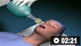
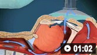

Treatment algorithm
Please note that formulations/routes and doses may differ between drug names and brands, drug formularies, or locations. Treatment recommendations are specific to patient groups: see disclaimer
Primary options
salbutamol inhaled: 2.5 to 5 mg nebulised every 20 minutes for up to 2 hours or until clinical improvement, followed by 4-6 hourly dosing; (100 micrograms/dose inhaler) 100-200 micrograms (1-2 puffs) every 20 minutes for up to 2 hours or until clinical improvement, followed by 4-6 hourly dosing
and/or
ipratropium inhaled: 0.25 to 0.5 mg nebulised every 20 minutes for up to 2 hours or until clinical improvement, followed by 4-6 hourly dosing; (20 micrograms/dose inhaler) 40 micrograms (2 puffs) every 20 minutes for up to 2 hours or until clinical improvement, followed by 4-6 hourly dosing
Short-acting bronchodilators include beta-2 agonists and anticholinergic bronchodilators. These medicines are delivered either by nebulisation or metered-dose inhaler, [244] and both reduce symptoms of dyspnoea; improve airflow, possibly by decreasing lung hyperinflation; [245] and are provided acutely to patients with an acute exacerbation as the initial treatment. [207] A systematic review did not find significant differences in FEV1 when short-acting bronchodilators were delivered by nebuliser as compared with metered-dose inhaler. [244] Severely dyspnoeic patients with low inspiratory flow rates may have difficulty achieving proper technique and medication delivery from the metered-dose inhaler devices; nebuliser treatment may be easier to use for such patients. Administration should be observed and a spacer should be used. There is insufficient evidence to determine whether metered-dose inhalers or the aerosol nebuliser technique is the optimal method of delivering bronchodilators to adults with COPD exacerbation who are receiving mechanical ventilation via endotracheal tube. [246]
Beta-2 agonists are typically favoured as first-line as they function more rapidly than anticholinergic bronchodilators. Initial therapy with beta-2 agonists may lead to a transient reduction in PaO2. [247] If the initial dose of short-acting bronchodilator does not provide sufficient benefit, the frequency of dosing may be increased and an anticholinergic bronchodilator may be added. [248] [249] Nebulised ipratropium may be given in combination with nebulised salbutamol. Ipratropium may be used in lieu of salbutamol for patients developing significant adverse effects due to beta-2 agonist use.
It is not clear whether the combination of a beta-2 agonist plus an anticholinergic bronchodilator provides additional benefit. [248] [250] [251] While there is no definitive evidence that the combination improves outcomes, patients may derive symptomatic benefit and additional bronchodilation because these agents work by different mechanisms. Combination therapy is generally recommended for patients who are not improving promptly on a beta-2 agonist alone. [1]
After clinical improvement, the time between doses may be increased as tolerated.
Optimal dosing of bronchodilators in acute exacerbations of COPD is yet to be determined; however, guidelines generally recommend increasing the dose or frequency of administration. The doses recommended below are a guide only and local protocols should be consulted.
Treatment recommended for ALL patients in selected patient group
Primary options
prednisolone: 30-40 mg orally once daily for 5-7 days
OR
methylprednisolone: 40-60 mg/day orally given once daily or in 2 divided doses for 5-7 days
OR
methylprednisolone sodium succinate: 0.5 to 2 mg/kg intravenously every 6 hours for up to 72 hours, followed by taper or change to oral dosing
The use of systemic corticosteroids for the treatment of acute exacerbation of COPD has been associated with greater early improvement in FEV1, improved oxygenation, faster recovery time, decreased duration of hospitalisation, and decreased rate of treatment failure and relapsed disease. [1] [126] [196] [197] [198] However, there is no evidence that the use of corticosteroids has effect on rates of mortality, [197] and the benefits for people with acute exacerbations associated with respiratory failure and the need for mechanical ventilation are less clear. [197] [201]
Studies identifying benefit in the use of corticosteroids have used a range of dose amounts and treatment durations. Previous national and international guidelines recommended that patients receive 30 to 40 mg prednisolone, or equivalent, for 7 to 14 days. [210] [248] It is not known whether tapering systemic corticosteroids provides clinical benefit apart from likely avoidance of adrenal insufficiency. One randomised controlled trial showed that 5 days’ treatment with 40 mg/day of prednisolone was non-inferior to 14 days’ treatment in regard to risk of exacerbations in the subsequent 6 months. [252] This 5-day regimen is recommended in the Global Initiative for Chronic Obstructive Lung Disease (GOLD) guidelines. [1] The Department of Veterans’ Affairs in the US recommends a similar dose of 30 to 40 mg/day of prednisolone for 5 to 7 days. [210] An equivalent oral dose of methylprednisolone may also be used. One systematic review found no difference in risk of treatment failure or relapse, likelihood of an adverse event, length of hospital stay, or lung function at the end of short (approximately 5 days) and longer (10-14 days) courses of systemic corticosteroids. [197]
Systemic corticosteroids should be initiated after the first treatment of short-acting inhaled bronchodilators.
Diabetes is common in patients with COPD, and the need for treatment of hyperglycaemia is more frequently encountered when patients receive systemic corticosteroids. [196] [197]
For patients able to take oral medications, intravenous corticosteroids do not appear to provide any significant benefit over those taken orally. [197] [199] [253] [254]
The shortest duration of systemic corticosteroids that confers clinical benefit while minimising adverse effects remains unclear.
[200]
[  ]
]
Treatment recommended for SOME patients in selected patient group
Selected airway clearance techniques such as mechanical vibration and non-oscillating positive expiratory pressure may improve sputum clearance in some patients with copious secretions, or concurrent bronchiectasis, and may slightly reduce short-term risk of need for ventilatory assistance,
[255]
[  ]
but are not uniformly helpful.
[206]
Other clearance techniques such as manual chest wall percussion are also either not routinely helpful or may have detrimental effects.
[256]
[257]
[258]
There is no proven benefit of airway clearance techniques on long-term outcomes following COPD exacerbation, such as reduction in subsequent exacerbation risk.
[255]
[
]
but are not uniformly helpful.
[206]
Other clearance techniques such as manual chest wall percussion are also either not routinely helpful or may have detrimental effects.
[256]
[257]
[258]
There is no proven benefit of airway clearance techniques on long-term outcomes following COPD exacerbation, such as reduction in subsequent exacerbation risk.
[255]
[  ]
]
Treatment recommended for SOME patients in selected patient group
Oxygen therapy is recommended for patients with acute exacerbations who are hypoxic (PaO2 <60 mmHg, SaO2 ≤90%). Oxygen is best administered in a controlled fashion via a high-flow Venturi mask to deliver 24% to 28% oxygen. [181] The goal of oxygen therapy is to increase PaO2 to ≥60 mmHg and SaO2 ≥90%. [13] [46] For patients with hypercarbia and more severe episodes, an ABG analysis is recommended 30 to 60 minutes after initiating oxygen therapy. Oxygen therapy may lead to worsening hypercarbia, acidosis, and respiratory failure due to worsening V/Q mismatch and decreased CO2-carrying capacity of oxygenated erythrocytes (Haldane effect). For this reason, oxygen delivery via a high-flow Venturi mask is favoured over nasal prongs as nasal prongs are less accurate and deliver higher inspired oxygen concentrations. [259] Careful titration of supplemental oxygen even in the pre-hospital setting (e.g., en route to the hospital) is important to prevent worsening respiratory acidosis and may impact mortality. [195] Oxygen therapy may be discontinued when the patient is able to maintain PaO2 ≥60 mmHg and/or SaO2 ≥90% on room air.
Treatment recommended for SOME patients in selected patient group
Primary options
amoxicillin: 500 mg orally three times daily
OR
doxycycline: 100 mg orally twice daily
OR
trimethoprim/sulfamethoxazole: 160/800 mg orally twice daily
OR
azithromycin: 500 mg orally once daily on day 1, followed by 250 mg once daily for 4 days
Secondary options
cefuroxime: 250-500 mg orally twice daily; 750 mg intravenously every 8 hours
OR
amoxicillin/clavulanate: 875 mg orally twice daily
MoreOR
clarithromycin: 500 mg orally twice daily
The severity depends on patient's prior status and any changes to previous baseline investigation (based on symptoms, examination, lung function, ABG).
Antibiotics should be given to patients with severe exacerbations requiring assisted ventilation, and those suspected of having a bacterial trigger for their acute exacerbations, [13] [31] [260] including in an acute exacerbation with increased sputum purulence, increased sputum volume, and/or worsening dyspnoea. [1] [177] [210]
It has been recommended that more narrow-spectrum antibiotics (e.g., amoxicillin, amoxicillin/clavulanate, doxycycline, tetracycline, second-generation cephalosporins, macrolides, trimethoprim/sulfamethoxazole) be considered for patients at less risk for a poor outcome and with an exacerbation of lesser severity. [210]
It has been shown that short courses (e.g., 5 days) of antibiotics are equally effective as courses >5 days for patients with mild to moderate exacerbations of COPD, [261] [262] and the recommended length of therapy is usually 5 to 7 days. [1]
Treatment recommended for SOME patients in selected patient group
Primary options
levofloxacin: 500 mg orally once daily for 3-10 days, or 750 mg orally once daily for 5 days
OR
ciprofloxacin: 500 mg orally twice daily for 7-10 days
OR
moxifloxacin: 400 mg orally/intravenously once daily for 3-10 days
OR
ampicillin/sulbactam: 1.5 to 3 g intravenously every 6 hours
MoreOR
ticarcillin/clavulanic acid: 3.2 g intravenously every 6 hours
MoreOR
piperacillin/tazobactam: 2.25 to 4.5 g intravenously every 6 hours
MoreOR
vancomycin:
Severity depends on patient's prior status and any changes to previous baseline investigation (based on symptoms, examination, lung function, ABG). Use of accessory muscles, paradoxical respirations, cyanosis, new peripheral oedema, haemodynamic instability, and worsened mental status (e.g., confusion, lethargy, coma) are important indicators of severity of exacerbation. [1]
Antibiotics should be given to patients with severe exacerbations requiring assisted ventilation, and those suspected of having a bacterial trigger for their acute exacerbations, [1] [13] [31] [260] including in an acute exacerbation with increased sputum purulence, increased sputum volume, and/or worsening dyspnoea. [1] [177] [210]
It has been recommended that broad-spectrum antibiotics such as extended-spectrum beta-lactam combination drugs, fluoroquinolones, and vancomycin are reserved for patients at greater risk for a poor outcome, people with more severe baseline COPD, or patients with an episode of greater severity, [61] [210] including people who require hospitalisation. Agents with activity against Pseudomonas aeruginosa are indicated for people at risk of this infection. [31]
The choice of antibiotic should also be based in part on local bacterial resistance patterns. Sputum cultures or endotracheal aspirates (in patients who are intubated) are recommended for assessment of bacterial infection in patients with severe lung function impairment, those with history of frequent exacerbations, and patients hospitalised with COPD exacerbations or who require mechanical ventilation. [1] [31]
Treatment recommended for SOME patients in selected patient group
Severity depends on patient's prior status and any changes to previous baseline investigation (based on symptoms, examination, lung function, ABG). Use of accessory respiratory muscles, paradoxical respirations, cyanosis, new peripheral oedema, haemodynamic instability, and worsened mental status (e.g., confusion, lethargy, coma) are important indicators of severity of exacerbation. [1]
Respiratory failure is often seen in patients with severe acute exacerbations of COPD. The application of non-invasive positive-pressure ventilation (NPPV) has been shown to improve gas exchange, reduce dyspnoea, decrease the need for endotracheal intubation, reduce complications such as pneumonia, and decrease length of hospitalisation and mortality in these patients.
[1]
[174]
[221]
[222]
[263]
[264]
[265]
[  ]
]
NPPV use should be considered for patients with one or more of the following: respiratory acidosis (PaCO2 ≥ 6.0 kPa or 45 mmHg and arterial pH ≤ 7.35); severe dyspnoea with clinical signs suggestive of respiratory muscle fatigue, increased work or breathing, or both, such as use of respiratory accessory muscles, paradoxical motion of the abdomen, or retraction of the intercostal spaces; persistent hypoxaemia despite supplemental oxygen therapy. [1]
Improvements in patient's level of dyspnoea and their physiological state are typically seen within 1 to 4 hours. [266] However, NPPV is not successful for all patients, and clinicians should discuss the risks and benefits of invasive mechanical ventilation with patients receiving NPPV to determine their desired course of treatment.
Treatment recommended for SOME patients in selected patient group
Severity depends on patient's prior status and any changes to previous baseline investigation (based on symptoms, examination, lung function, ABG). Use of accessory respiratory muscles, paradoxical respirations, cyanosis, new peripheral oedema, haemodynamic instability, and worsened mental status (e.g., confusion, lethargy, coma) are important indicators of severity of exacerbation. [1] [46]
Non-invasive positive-pressure ventilation (NPPV) may fail. Invasive mechanical ventilation should be considered for patients with outright respiratory or cardiac arrest, who are in or have signs of impending acute respiratory failure despite NPPV, have impaired mental status or cardiovascular instability, are at high risk for aspiration, or have thick or copious secretions, or for whom NPPV cannot be appropriately applied (e.g., craniofacial trauma, recent gastro-oesophageal surgery, anxiety disorder). [224]
 Tracheal intubation animated demonstration
 Bag-valve-mask ventilation animated demonstration
Physiological criteria for invasive mechanical ventilation include the following: severe hypoxia, inability to tolerate NPPV or failure of NPPV, respiratory or cardiac arrest, irregular breathing with gasping or loss of consciousness, massive aspiration or persistent vomiting, inability to clear respiratory secretions, heart rate <50 beats per minute with diminished alertness, severe haemodynamic instability without response to therapy, or severe ventricular or supraventricular arrhythmias. [1] [225]
The risk for mortality is significant (11% to 49%) for people with severe disease in whom invasive mechanical ventilation is indicated. [13] [226] Complications of mechanical ventilation include ventilator-associated pneumonia and barotrauma.
Weaning patients with severe COPD from mechanical ventilation can be difficult. [224] Use of NPPV to assist weaning from mechanical ventilation can reduce weaning failure and nosocomial pneumonia, and may reduce mortality. [223] [227]
Patients with COPD who experience acute exacerbations of COPD often have skeletal muscle dysfunction, potentially due to limited physical activity, nutritional disturbances, corticosteroid use, and/or systemic inflammatory factors. [267] [268]
Pulmonary rehabilitation is a multidisciplinary programme of care that involves physical rehabilitation as well as guidance on disease management, nutrition, and other lifestyle issues (e.g., smoking cessation, medication compliance and inhaler technique, supplemental oxygen, and maintenance of physical activity). [232] [233]
Exercise training, particularly resistance training and transcutaneous electrical muscle stimulation initiated during hospitalisation for COPD exacerbation are well tolerated and can prevent muscle function decline and hasten functional status recovery. [234] [235] [236]
Pulmonary rehabilitation initiated early during the recovery phase of an exacerbation is safe and effective, and leads to improvements in exercise tolerance, physical abilities, the degree of symptoms due to COPD, and quality of life. [237] [238] [239] [241] [269] [270] [271] Comprehensive supervised pulmonary rehabilitation in the outpatient setting in the post-exacerbation period also decreases the risk for future hospitalisation and may reduce mortality. [232] [238] [242] As COPD patients and their exacerbations are highly heterogeneous, determining who may benefit from respiratory rehabilitation varies greatly according to the comorbidities and other characteristics of individual patients.
Disease management programmes can be helpful, [231] [272] [273] [274] but their use remains controversial given a randomised controlled trial had to be stopped early due to a noted increase in mortality in the comprehensive care management group as compared with control patients who were receiving guideline-based routine medical care. [275] Another study involving unsupervised home-based exercise training following hospitalisation for acute COPD exacerbation also showed a mortality signal at the 6-month post-hospitalisation time point. [243]
Some data are emerging that hospital-at-home care with support from respiratory nurses may be appropriate for selected people with moderate exacerbations of COPD.
[276]
[  ]
However, this approach is not yet considered the standard of care,
[88]
[277]
and people with unstable vital signs, decompensated gas exchange, acute respiratory acidosis, worsened hypoxaemia, change in mental status, or significant comorbid illness are not suitable for this approach.
]
However, this approach is not yet considered the standard of care,
[88]
[277]
and people with unstable vital signs, decompensated gas exchange, acute respiratory acidosis, worsened hypoxaemia, change in mental status, or significant comorbid illness are not suitable for this approach.
A randomised controlled trial has suggested that the use of nurse-centred tele-assistance may decrease the occurrence of exacerbations of COPD and hospitalisation. The use of such programmes may be cost-saving. [278] However, another randomised controlled trial demonstrated that telemonitoring integrated into existing clinical services did not reduce hospital admissions or improve patients’ quality of life. [279]
Use of this content is subject to our disclaimer
![]()